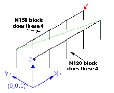
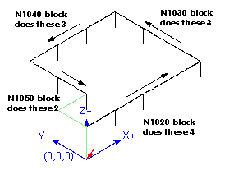

There are at least two reasons for using canned cycles. The first is the economy of code. A single bore would take several lines of code to execute.
Example 1 above demonstrated how a canned cycle could be used to produce 8 holes with ten lines of nc code within the canned cycle mode. The program below will produce the same set of 8 holes using five lines for the canned cycle. It does not follow exactly the same path nor does it drill in the same order as the earlier example. But the program writing economy of a good canned cycle should be obvious.
|
Example 7 - Eight Holes Revisited
n100 g90 g0 x0 y0 z0 (move coordinate home)
n110 g1 f10 x0 g4 p0.1
n120 g91 g81 x1 y0 z-1 r1 l4(canned drill cycle)
n130 g90 g0 x0 y1
n140 z0
n150 g91 g81 x1 y0 z-.5 r1 l4(canned drill cycle)
n160 g80 (turn off canned cycle)
n170 m2 (program end)
|
|

|
Example 8 - Twelve holes in a square
This example demonstrates the use of the L word to repeat a set of incremental drill cycles for successive blocks of code within the same G81 motion mode. Here we produce 12 holes using five lines of code in the canned motion mode.
|
N1000 G90 G0 X0 Y0 Z0 (move coordinate home)
N1010 G1 F50 X0 G4 P0.1 N1020 G91 G81 X1 Y0 Z-0.5 R1 L4 (canned drill cycle) N1030 X0 Y1 R0 L3 (repeat) N1040 X-1 Y0 L3 (repeat) N1050 X0 Y-1 L2 (repeat) N1060 G80 (turn off canned cycle) N1070 G90 G0 X0 (rapid home) N1080 Y0 N1090 Z0 N1100 M2 (program end)
|
|

|
The second reason to use a canned cycle is that they all produce preliminary moves and returns that you can anticipate and control regardless of the start point of the canned cycle.